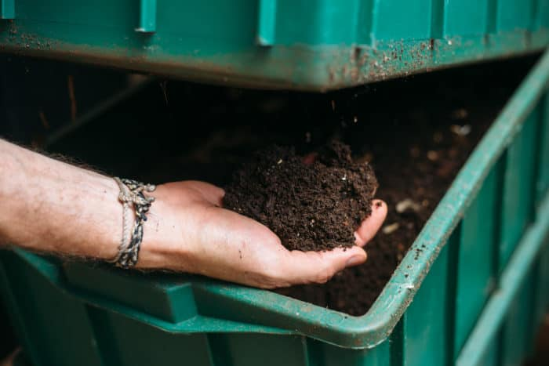
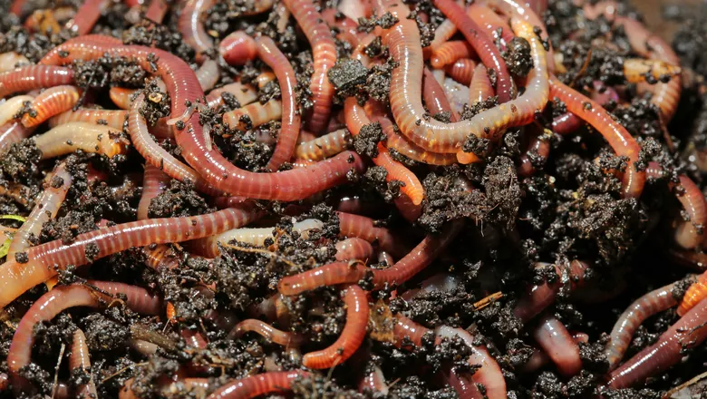
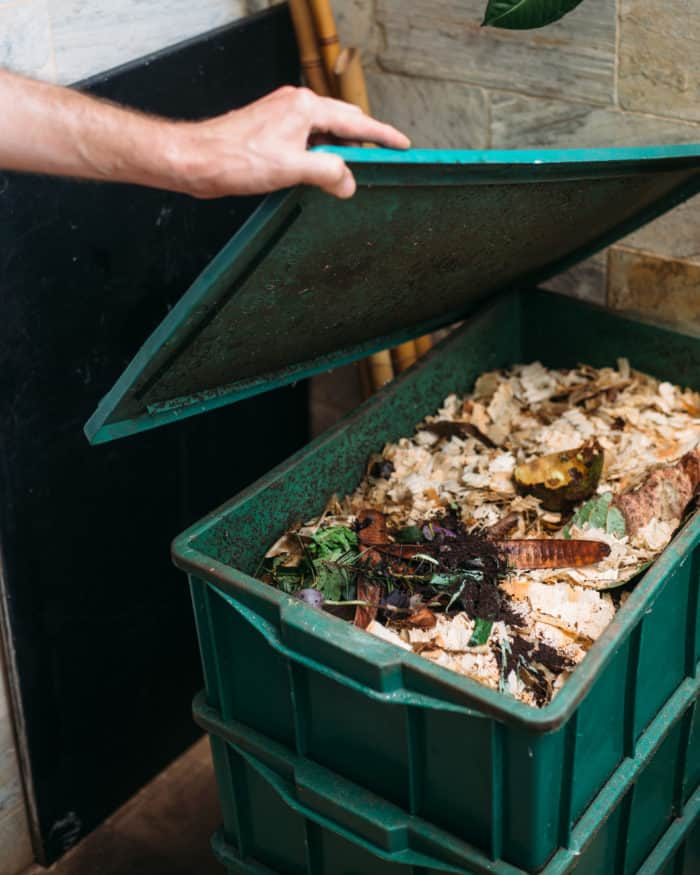

Na compostagem doméstica pode ser colocado:
Entre os itens proibidos de serem colocados na compostagem estão:
A razão para que os itens acima sejam vetados na compostagem doméstica é porque o tempo de composição é lento, o que acaba gerando mau cheiro e atraindo animais e insetos para o ambiente.
Além disso, a decomposição de alguns resíduos como gorduras e arroz não favorecem o enriquecimento da terra que se transformará em adubo, consequentemente, podem fazer mal às plantas.
Já as fezes de animais de estimação podem ter vírus ou parasitas que matam as minhocas e ainda contaminam a terra, impossibilitando o uso.
Por fim, os diferentes tipos de papel, especialmente os que têm algo impresso, estão cheios de produtos químicos pesados e tinta que não são biodegradáveis.
Dessa forma, o recomendado é separar os papéis que já não tem mais utilidade e levar até um ponto de reciclagem específico para esses materiais.
algumas dicas antes de começar:
link: erros comuns na compostagem: revolver ou não?
1. Sua Composteira Doméstica deve ficar em um local arejado e sombreado. O calor em excesso compromete o bem estar e a vida das minhocas, além de acelerar o processo de decomposição e causar desequilíbrio.
2. Inicialmente, coloque os resíduos orgânicos em cima do local onde as minhocas se encontram.
3. SEMPRE CUBRA OS RESÍDUOS ORGÂNICOS COMPLETAMENTE com matérias secas (folhas, palhas, serragem, papel, papelão picado ou jornal, como última opção). O melhor tipo de material para este fim são as serragens grossas, mas tudo bem se usar da fina, que é mais comum. Atenção para não pegar serragem de madeiras tratadas (verniz, tinta, etc), nem de aglomerados e fórmicas devido às colas e químicos presentes nesse tipo de material, tá? Ah, você pode conseguir serragem gratuita nas marcenarias – procure uma perto de sua casa e leve uma sacolinha, nós nunca pagamos por elas.
4. Os resíduos orgânicos devem ser colocados no balde digestor que está em cima (balde onde se encontram as minhocas). O uso específico de cada um vai determinar o tempo de enchimento do balde, bem como o período de compostagem completa dos resíduos. Quando este primeiro balde encher (tem que encher MESMO, pra ter contato com o fundo do balde que ficará por cima pras minhocas poderem migrar depois de terminarem ‘oserviço’ nesse balde), coloque-a no meio do sistema, e suba o balde que estava no meio para receber os próximos resíduos orgânicos. Este balde também deve receber uma camada primária que pode ser retirada (cama de minhocas) do balde que ficou cheio, pois a quantidade de minhocas no início ainda é reduzida, então elas levarão mais tempo que o normal para digerir totalmente os resíduos orgânicos dos primeiras baldes. Por esse motivo, é possível que nas primeiras colheitas de húmus os resíduos não estejam totalmente “digeridos”, porém, já passaram pelo processo de fermentação (calor) e pode ser usado normalmente como adubo. Em poucos meses as minhocas se multiplicarão, povoarão os dois baldes digestores e compostarão seus resíduos orgânicos mais rapidamente. Quando for trocar o balde, vale a pena mexer o conteúdo do balde de cima com a ajuda de uma pá.
5. Para agilizar o processo de digestão, pique os resíduos antes de colocar nos baldes.
6. As minhocas conseguem sobreviver até 3 meses sem a inserção de novos alimentos. Portanto, se precisar viajar por tanto tempo, complete o baldes com alimentos frescos e vá tranquila(o) mas não se esqueça de deixar a composteira na sombra!
7. Para possibilitar a retirada do biofertilizante líquido (chorume orgânico) pela torneira, a composteira deve estar apoiada em algum suporte que eleve a altura do balde inferior. Recolha e dilua-o em água, na proporção de 1 parte para 10 a 15 partes de água e regue suas plantas.
8. Às vezes acontece de algumas minhocas caírem no balde do chorume e morrerem afogadas por não conseguirem voltar para o balde do meio. Para evitar isso é aconselhável coletar o biofertilizante semanalmente ou colocar um ou mais tijolos dentro desse balde, ecostado(s) em uma das paredes, pois eles oferecerão a aderência necessária para as minhocas conseguirem sair do líquido e subir para o balde do meio, tá?
9. Para a coleta do húmus é necessário que o balde do meio (cheio) esteja sendo ‘trabalhado’ pelas minhocas a algumas semanas (como já observado, cada sistema tem o seu tempo). Quando elas terminarem de digerir tudo irão migrar para o balde de cima, com alimento fresco. Uma estratégia é colocar esse balde cheio (do meio) aberto no sol (se possível) pois as minhocas mergulharão para o fundo, facilitando a retirada do adubo que estará na parte superior do balde. Nas primeiras retiradas de húmus sugerimos devolver as minhocas para a composteira para aumentar sua população.
